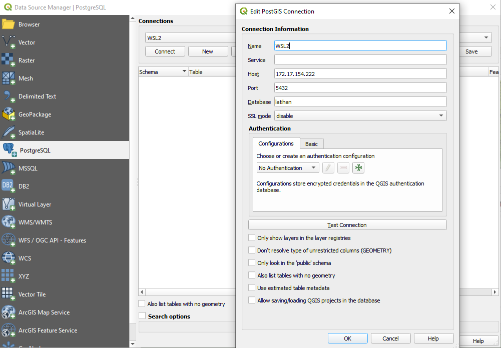
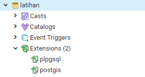
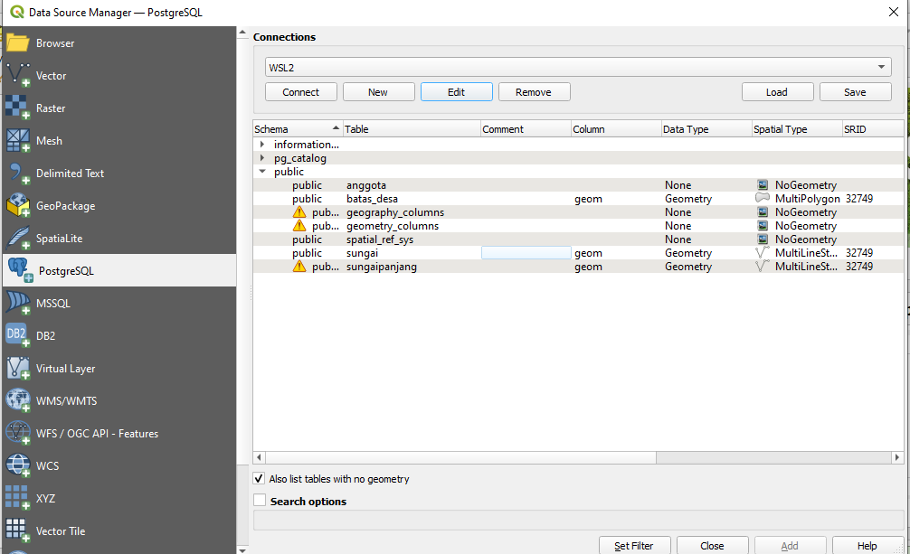
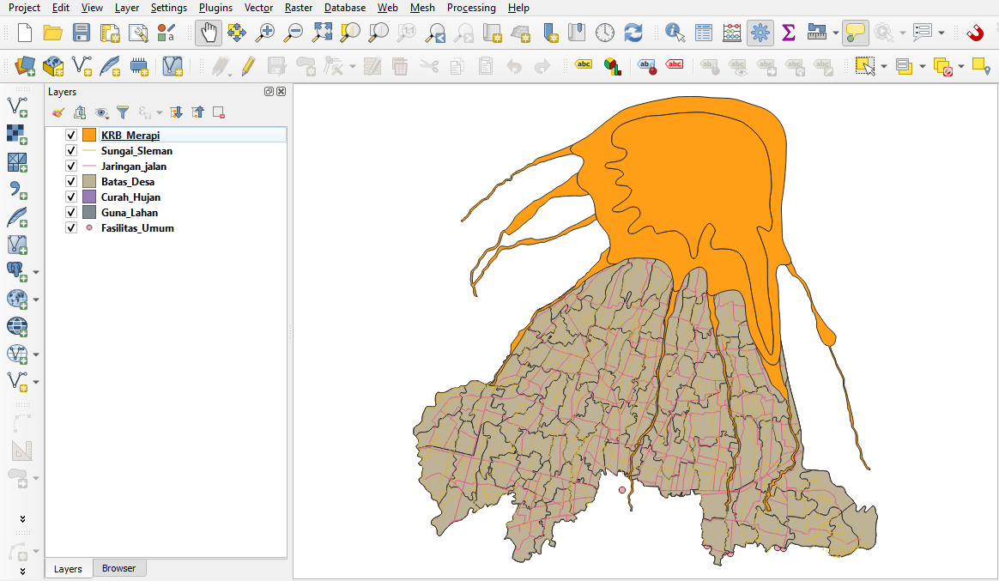
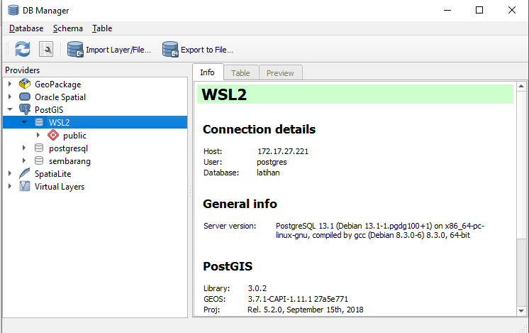
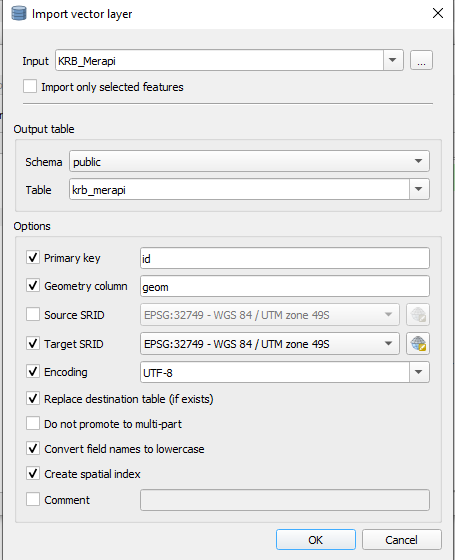
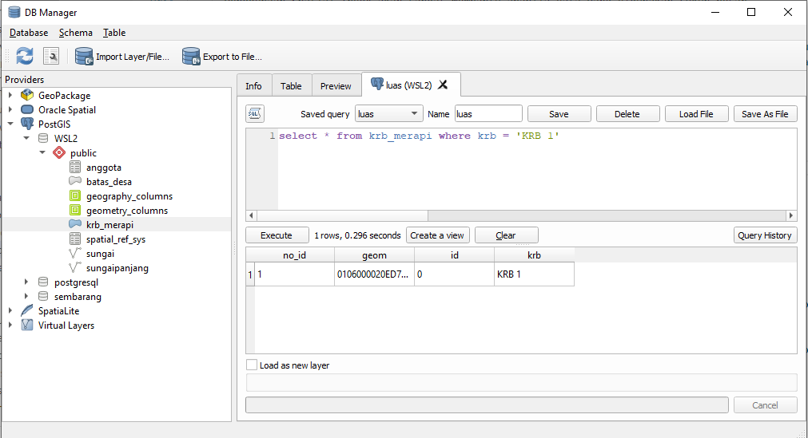
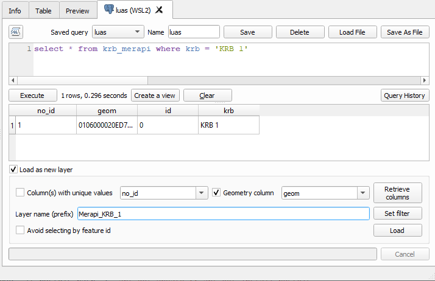

Basisdata Spasial dengan PostGIS¶
Pada bagian ini akan dibahas mengenai bagaimana menggunakan PostGIS untuk melakukan analisis spasial sederhana. QGIS akan digunakan sebagai antarmuka utama untuk melakukan koneksi pada PostGIS dan menampilkan hasil analisis.
Catatan
Latihan ini akan menggunakan QGIS, sehingga terlebih dahulu lakukan instalasi QGIS.
Adapun Data untuk latihan ini dapat diperoleh dari link berikut:
https://github.com/danylaksono/sleman-dataset/
Gunakan Github untuk melakukan clone atau unduh seluruh data sebagai zip
Pengantar PostGIS¶
Dalam implementasi GIS generasi pertama, semua data spasial disimpan dalam file datar dan perangkat lunak GIS khusus diperlukan untuk menafsirkan dan memanipulasi data. Sistem pengelolaan generasi pertama ini dirancang untuk memenuhi kebutuhan pengguna yang semua data yang diperlukan berada dalam domain organisasi pengguna. Mereka adalah sistem berpemilik dan mandiri yang secara khusus dibangun untuk menangani data spasial.
Sistem spasial generasi kedua menyimpan beberapa data dalam database relasional (biasanya “atribut” atau bagian non-spasial) tetapi masih kekurangan fleksibilitas yang diberikan dengan integrasi langsung.
“Database spasial sejati lahir ketika orang mulai memperlakukan fitur spasial sebagai objek database kelas satu.”
Database spasial sepenuhnya mengintegrasikan data spasial dengan database relasional objek. Orientasi berubah dari GIS-centric menjadi database-centric.
{kind=link}
Fig. 26 Evolusi Basisdata Spasial untuk GIS¶
Untuk memanipulasi data selama kueri, database biasa menyediakan fungsi seperti menggabungkan string, melakukan operasi hash pada string, melakukan matematika pada angka, dan mengekstraksi informasi dari tanggal. Database spasial menyediakan satu set lengkap fungsi untuk menganalisis komponen geometris, menentukan hubungan spasial, dan memanipulasi geometri. Fungsi spasial ini berfungsi sebagai blok bangunan untuk setiap proyek tata ruang.
Mayoritas dari semua fungsi spasial pada PostGIS dapat dikelompokkan ke dalam salah satu dari lima kategori berikut:
Konversi: Fungsi yang mengonversi antara geometri dan format data eksternal.
Manajemen: Fungsi yang mengatur informasi tentang tabel spasial dan administrasi PostGIS.
Retrieval: F ungsi yang mengambil properti dan pengukuran Geometri.
Perbandingan: Fungsi yang membandingkan dua geometri sehubungan dengan hubungan spasialnya.
Pembuatan data: Fungsi yang menghasilkan geometri baru dari orang lain. Daftar fungsi yang mungkin sangat besar, tetapi sekumpulan fungsi umum ditentukan oleh OGC SFSQL dan diimplementasikan (bersama dengan fungsi tambahan yang berguna) oleh PostGIS.
Menggunakan QGIS sebagai antarmuka PostGIS¶
QGIS barangkali merupakan perangkat lunak GIS OpenSource yang paling terkenal. QGIS memiliki berbagai dukungan format data spasial, termasuk untuk koneksi terhadap basisdata PostGIS. Pada latihan ini akan digunakan QGIS untuk melakukan koneksi pada basisdata.
QGIS memiliki berbagai opsi untuk terhubung dengan beragam format data yang berbeda. Koneksi ke basisdata PostgreSQL (dan dengan demikian PostGIS), dapat dilakukan melalui menu Data Source Manager sebagai berikut:

Lakukan koneksi pada basisdata PostGIS yang tersimpan pada WSL. Gunakan menu connect untuk menyambungkan basisdata sesuai dengan parameter yang diperlukan. Untuk saat ini, basisdata ini masih kosong tanpa ada isi apapun. Kita akan gunakan data dari unduhan di atas untuk mengisi basisdata ini dengan menggunakan QGIS.
Latihan: Memasukkan Data pada PostGIS¶
Berikut adalah data yang tersedia pada link unduhan yang disebutkan di atas: Data vector yang digunakan berupa data di daerah Kabupaten Sleman, antara lain: * Data jaringan jalan (line) * Data jaringan sungai (line) * Data bangunan (polygon) * Data titik-titik penting (point) * Data batas administrasi (polygon) * Data penggunaan lahan (multipolygon) * Data Kawasan Rawan Bencana (KRB) BNPB 2010 (polygon) Data berupa raster terdiri atas: * Raster populasi penduduk Indonesia dengan resolusi 100 meter yang diambil dari www.worldpop.org.uk * Raster SRTM dengan resolusi 30 meter.
Untuk latihan ini, terlebih dahulu kita masukkan data-data tersebut di atas ke dalam Basisdata PostGIS. Kita akan menggunakan basisdata latihan yang kita buat pada latihan sebelumnya. Akan tetapi, kita perlu untuk terlebih dulu mengaktifkan ekstensi PostGIS pada basisdata latihan. Gunakan psql atau pgAdmin4 untuk menjalankan query berikut:
CREATE EXTENSION postgis;
Kita dapat memeriksa bahwa ekstensi postgis telah diaktifkan pada basisdata ini menggunakan pgAdmin:

Dengan demikian, basisdata latihan sudah dapat digunakan untuk menyimpan dan menganalisis data geospasial. Untuk itu kita akan masukkan data vektor dan data raster di atas ke dalam basisdata. QGIS memiliki menu yang praktis untuk keperluan ini.
Untuk data vektor, kita akan gunakan QGIS untuk memasukkan data pada PostGIS. Pastikan bahwa basisdata telah terkoneksi melalui menu
Data Source Managerpada langkah sebelumnya.
Centang
also list tables with no geometryakan memunculkan tabelanggotayang kita gunakan pada latihan sebelumnya. Parameter koneksi pada antarmuka tersebut sama dengan parameter koneksi yang diperlukan untuk menghubungkan pgAdmin dan PostgreSQL pada latihan sebelumnya.Selanjutnya, tambahkan tiap layer shapefile pada data unduhan ke dalam QGIS, seperti berikut:

Buka menu DBManager, kemudian lakukan koneksi ke basisdata (cukup dengan membuka/expand koneksi basisdata yang dimaksud)

Gunakan menu
Import Layer/File...untuk mengkonversi layer pada QGIS menjadi tabel pada PostGIS, seperti berikut.
Penggunaan Spatial Index akan sangat membantu apabila data yang digunakan cukup besar.
Catatan
Karena suatu alasan, QGIS sepertinya tidak mendukung penggunaan huruf besar pada nama tabel maupun kolom. Gunakan huruf kecil pada nama Table dan centang
Convert field names to lowercaseuntuk memastikan tidak ada masalah pada saat menjalankan SQL nantinya.Gunakan menu SQL Window untuk memasukkan Query:

Hasil Query dapat disimpan dalam bentuk View (tabel baru) maupun layer pada QGIS. Klik pada centang
Load as New LayerKlik Load untuk memuat layer tersebut pada QGIS
Pada pembahasan di bawah ini terdapat contoh-contoh penggunaan SQL pada PostGIS untuk menyelesaikan berbagai permasalahan. Sebelum itu, kita perlu memasukkan terlebih dahulu data raster ke dalam basisdata PostGIS. Untuk menambahkan raster ke PostGIS kita dapat menggunakan fungsi raster2pgsql.
Untuk data raster, terlebih dahulu kita perlu mengakses mesin Docker dengan mengcopikan data pada root mesin tersebut, sebagai berikut:
docker exec -it postgis bash -c "apt-get update && apt-get install postgis" docker cp dem.tif postgis:/
ini apabila kita asumsikan data raster yang kita copykan bernama
dem.tif.Selanjutnya, gunakan raster2pgsql untuk mengkonversi raster menjadi sql melalui operasi pipe:
docker exec -it postgis bash -c 'raster2pgsql -s 32749 -I -C -M dem.tif -F -t 100x100 public.rstdem | psql -U postgres -d latihan'
Dengan demikian,
raster2pgsqlakan mengkonversi datadem.tifmenjadi tabelrstdempada basisdatalatihan.
Setelah semua data selesai kita muat pada QGIS, saatnya meng-eksplorasi berbagai fungsi analisis PostGIS. Berikut adalah beberapa contoh penggunaan fungsi pada PostGIS untuk keperluan analisis spasial pada data vektor maupun raster.
Latihan: Query Spasial pada data vektor¶
Berikut adalah beberapa latihan yang dapat dilakukan menggunakan QGIS dan PostGIS. Gunakan DBManager (Menu Database > DBManager) pada QGIS untuk mengakses PostGIS,
Selanjutnya, buat query-query berikut ini. Sesuaikan atribut dan nama kolom dengan data yang digunakan.
Mencari titik-titik penting (POI) yang berada pada kawasan rawan bencana:
select poi.id_0, poi.geom from poi, krb where st_within(poi.geom,krb.geom) = True
hasilnya,
Buffer jalan utama sejauh 100 meter
select id, name, st_buffer(geom, 100) from jalan where type = 'primary'
Menampilkan jumlah bangunan pendidikan di berbah
select count(id_0) as jumlah from poi where st_within(poi.geom, ( select geom from kecamatan where kec = 'Berbah')) and fungsi = 'Pendidikan'
Total Panjang Jalan utama di Kecamatan Berbah
select sum(st_length(jalan.geom)) as total from jalan, kecamatan where jalan.type = 'primary' and st_intersects(jalan.geom, (select geom from kecamatan where kec = 'Berbah'))
Mencari jalan yang berjarak 5 kilometer dari STIE YKPN
select jalan.id, jalan.name, jalan.type from jalan, poi where ST_DWithin(poi.geom, jalan.geom, 5000) and poi.nama = 'STIE YKPN'
Mencari kecamatan paling luas di Kabupaten Sleman
select kec, st_area(geom) as luas from kecamatan where st_area(geom) in ( select max(st_area(geom)) from kecamatan )
Menampilkan ruas jalan terpanjang di Kecamatan Berbah
select name, st_length(geom) as panjang from jalan where st_length(geom) in ( select max(st_length(jalan.geom)) from jalan, kecamatan where st_intersects(jalan.geom, kecamatan.geom) and kec='Berbah' )
Mencari kecamatan yang dilewati oleh Jalan Kabupaten
select kec from kecamatan, jalan where st_intersects(jalan.geom,kecamatan.geom) and jalan.geom in (select geom from jalan where name='Jln. Kabupaten')
Mencari luas Hutan
select st_area(geom) as luas from gunalahan where guna_lahan='HUTAN'
Mencari jumlah bangunan di area KRB III
select st_area(geom) as luas from krb where id = '3'
Untuk latihan lanjutan, coba lakukan Query berikut:
Menampilkan jumlah titik penting yang berada di kecamatan Berbah
Menampilkan Bangunan dengan luas lebih dari 1500 m2
Menampilkan keliling Kecamatan Cangkringan
Menampilkan panjang jalan kaliurang
Menampilkan panjang total semua sungai
Latihan: Query Spasial pada Raster¶
Berikut contoh analisis raster dengan PostGIS:
Membuat tingkat kepadatan penduduk pada kecamatan Berbah
CREATE TABLE klasifikasi (rid SERIAL primary key, rast raster);
INSERT INTO klasifikasi (rast)
with Berbah as
(Select geom from kecamatan where kec='Berbah'),
klip as
(Select ST_Clip(rast, 1, geom, true) as rast from rstdem, berbah where st_intersects(geom,rast))
select st_reclass(rast, 1, '0-50:1, 51-100:2, 101-150:3, 151-200:4', '4BUI', 0) from klip;
SELECT AddRasterConstraints('klasifikasi'::name, 'rast'::name);
Rencana Lokasi perumahan di Kecamatan Kalasan Dibuat kondisi sebagai berikut:
Penggunaan lahan berupa sawah irigasi atau tegalan
Berada pada daerah Kecamatan Kalasan
Kemiringan lereng tidak lebih dari 0.1 radian Dibuat query sebagai berikut:
CREATE TABLE perumahan (rid SERIAL primary key, rast raster);
INSERT INTO perumahan(rast)
with kalasan as
(select geom from kecamatan where kec='Kalasan'),
sawah as
(select geom from gunalahan where guna_lahan='SAWAH IRIGASI' or guna_lahan='TEGALAN'),
potong1 as
(select ST_Clip(rast, 1, geom, true) as rast from rstdem, kalasan where st_intersects(geom,rast)),
lereng as
(select ST_Slope(rast, 1, '32BF') as rast from potong1),
kelas_lereng as
(select st_reclass(rast, 1, '0-0.09:1', '4BUI', 0) as rast from lereng)
SELECT ST_Clip(rast, 1, geom, true) from kelas_lereng, sawah where st_intersects(geom,rast);
SELECT AddRasterConstraints('perumahan'::name, 'rast'::name);
hasilnya: